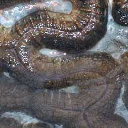

|
|
| hard corals text index | photo index |
| Phylum Cnidaria > Class Anthozoa > Subclass Zoantharia/Hexacorallia > Order Scleractinia |
| Brain
corals Family Lobophylliidae* updated Sep 2025 Where seen? These dome-shaped hard corals do somewhat resemble fleshy brains and are often seen on many of our Southern shores. Lobophyllia and Symphyllia were previously in the Family Mussidae. Features: Members of the Family Lobophylliidae develop into large colonies with heavy skeletons. The thick walls of Lobophyllia and Symphyllia form meandering valleys, and when submerged is covered with thick fleshy tissue, thus resulting in their common names. The walls have prominent 'teeth'. Some species of Lobophyllia and Symphyllia look very similar and requires close examination to differentiate. On this website they are grouped by external features for convenience of display. Sometimes mistaken for Corals with maze-like patterns (Family Faviidae), which have thinner corallite walls without large 'teeth'. Status: While a few species are listed as Vulnerable or Near Threatened, for most there is inadequate information as at 2024 to make an informed assesment of the conservation status of the recorded Family Lobophylliidae corals in Singapore. |
*Species are difficult to positively identify without close examination.
On this website, they are grouped by external features for convenience of display.
| Some Brain corals on Singapore shores |

|
 |
 |
|
Lobed
brain coral
Lobophyllia sp. |
Corallite
walls are separate.
|
Valleys
not as meandering.
|
 |
 |
 |
|
Grooved
brain coral
Symphyllia sp. |
Corallite
walls are joined.
There is usually a slight groove or dent along the top of the wall. |
Valleys
wide and more meandering.
|
| Family
Lobophylliidae recorded for Singapore from Checklist of Cnidaria (non-Sclerectinia) Species with their Category of Threat Status for Singapore by Yap Wei Liang Nicholas, Oh Ren Min, Iffah Iesa in G.W.H. Davidson, J.W.M. Gan, D. Huang, W.S. Hwang, S.K.Y. Lum, D.C.J. Yeo, May 2024. The Singapore Red Data Book: Threatened plants and animals of Singapore. 3rd edition. National Parks Board. 663 pp. in red are those listed as threatened in the above.
|
|
Links
|